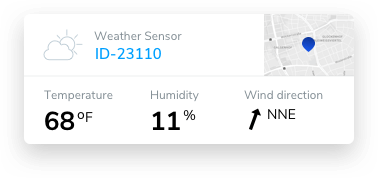
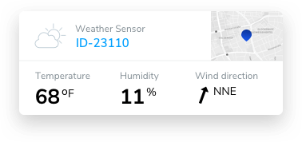

New
Visit our new Industry Marketplace for latest integrations and collaborations for Industry 4.0

IOTA makes it possible
to securely store, sell,
and access data streams.
Never has getting access to diverse, fine-granular data been this easy!
About the initiative
Participants

 



The IOTA Foundation launched the Data Marketplace as a proof of concept and open innovation ecosystem in the fourth quarter of 2017. The rationale and opportunity landscape related to this initiative are described in depth here.
As of 2019, the initiative produced a PoC available online at https://data.iota.org and continued to onboard organisations. We now have more than 70 organisations signed up.

The IOTA Tangle is a secure data communication protocol and zero fee micro-transaction system for the IoT/M2M. It provides the means to develop new "smart" business models in the IoT, enabling connected devices and "machines" to share securely information based on a new framework of 'Trust in the Data' and also allow seamless transactions between IoT devices.
The IOTA Data Marketplace is a simplified platform which simulates how a connected device running the IOTA protocol can be paid rapidly for sharing secure data over to a web browser.
Selected participants